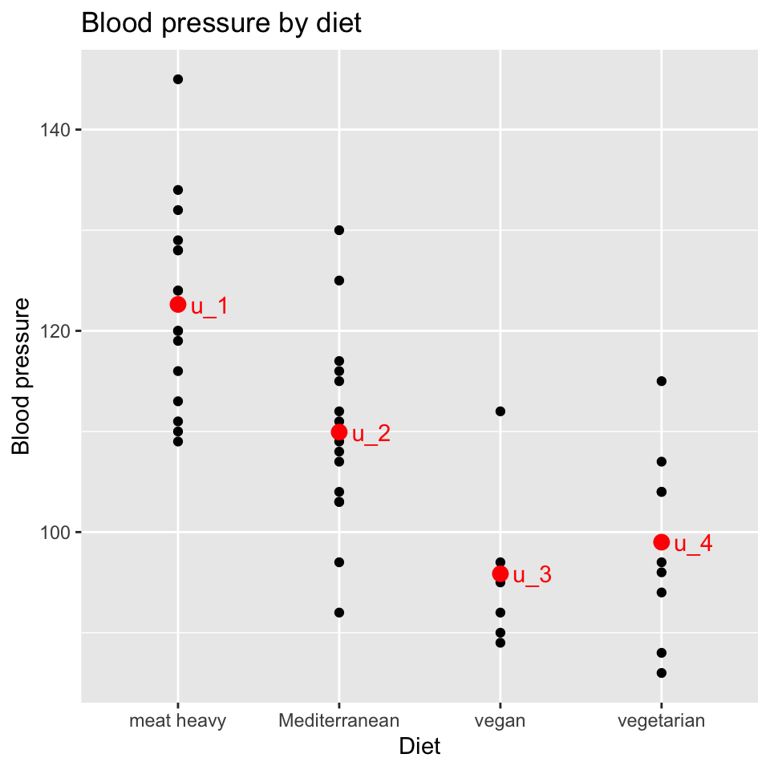
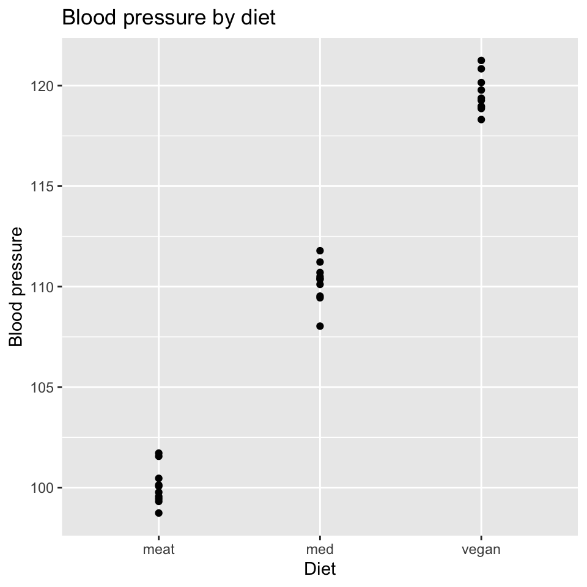
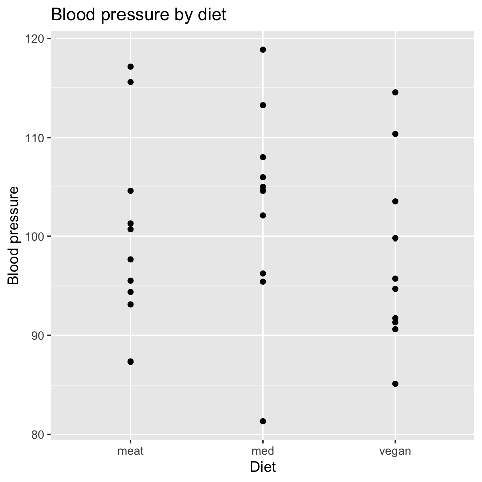
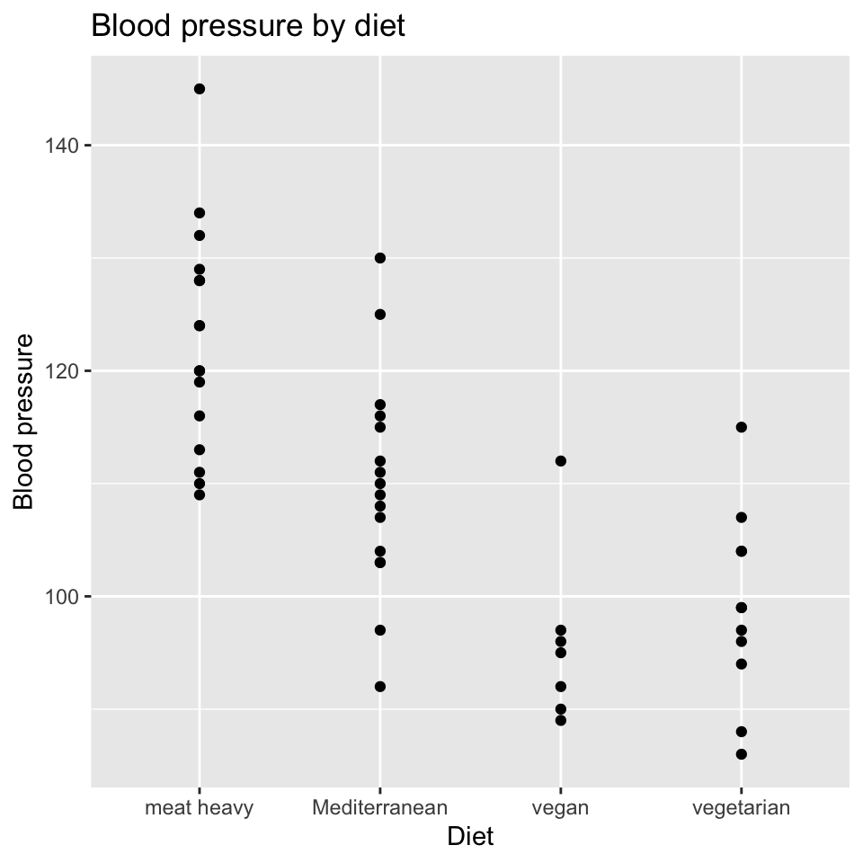
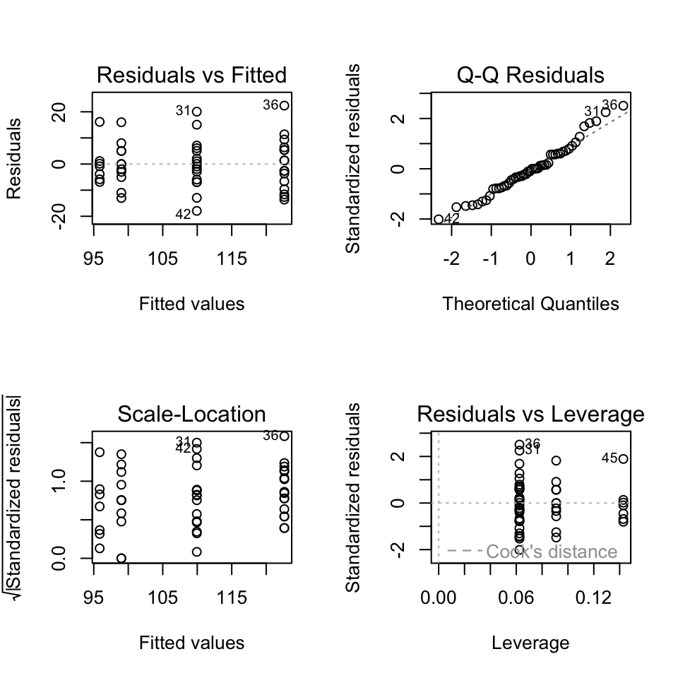
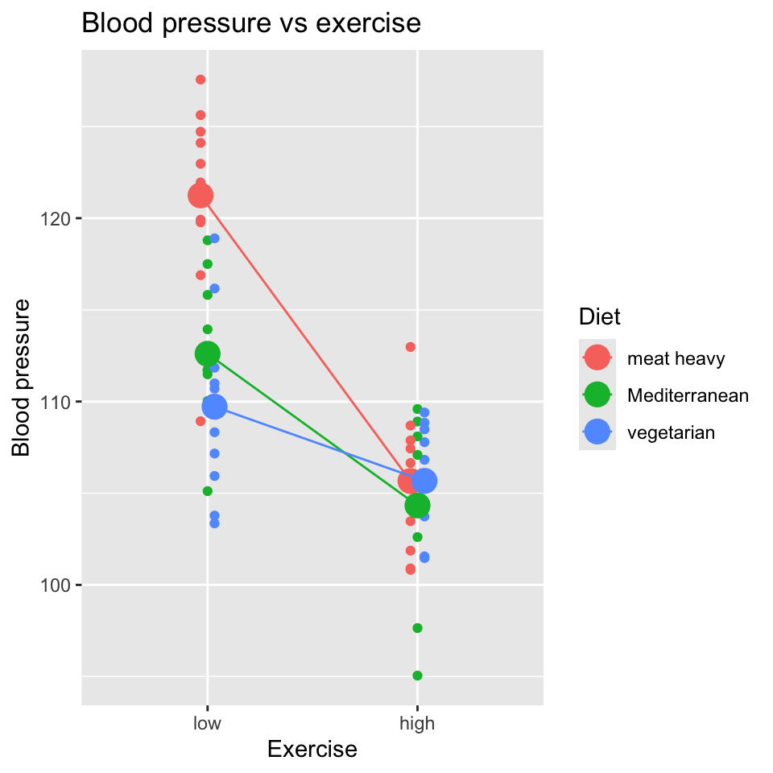
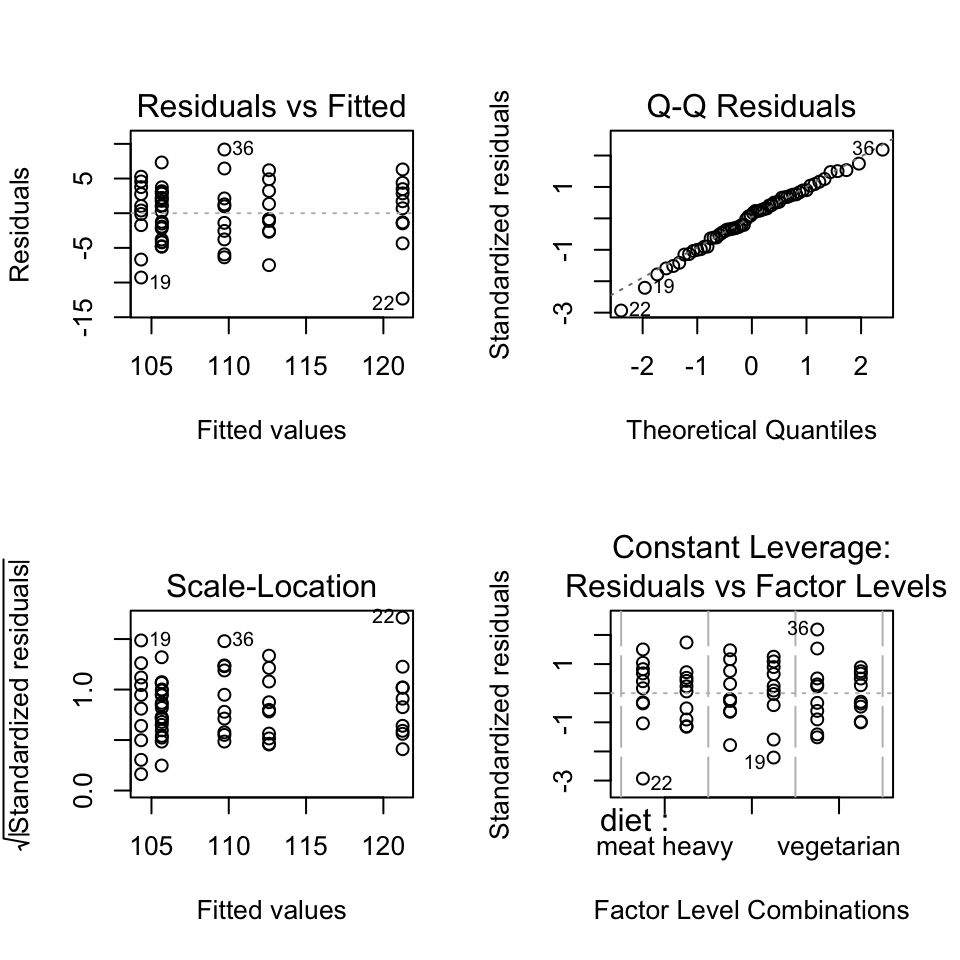
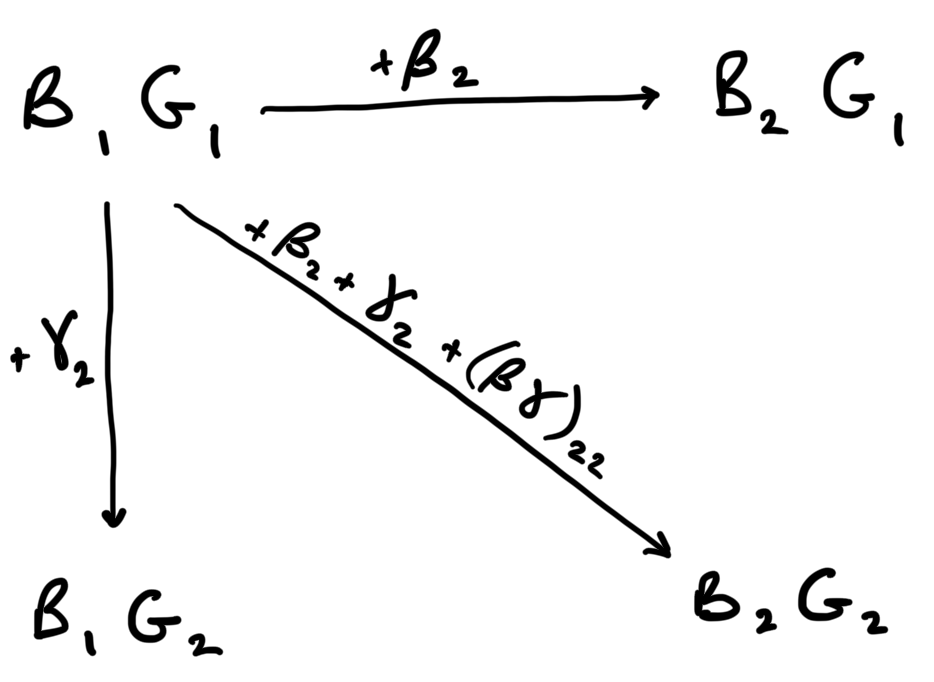

`summarise()` has grouped output by 'diet'. You can override using the
`.groups` argument.ANOVA (L6)
This chapter contains the content of the sixth lecture of the course BIO144 Data Analysis in Biology at the University of Zurich.
- One-way ANOVA
- Post-hoc tests and contrasts
- Two-way ANOVA
ANOVA = ANalysis Of VAriance (Varianzanalyse)
Introduction
Analysis of variance is a method to compare the means of more than two groups. We already know a lot about analysing variance: we compared the total sum of squares (SST), model sum of squares (SSM) and the residual sum of squares (SSE) in the context of linear regression. We used these to calculated the \(R^2\) value and the \(F\)-statistic. To calculate the F-statistic we used the formula \(F = \frac{MSM}{MSE}\), where \(MSM\) is the mean square of the model and \(MSE\) is the mean square of the residuals. The mean square is a measure of variance.
Analysis of variance is a special case of a linear model, so much of what we already learned about linear models still holds.
The defining characteristic of ANOVA is that we are comparing the means of more than two groups. Put another way, we will have a single categorical explanatory variable with more than two levels. We will test whether the means of the response variable are the same across all levels of the explanatory variable.
When we have only one categorical explanatory variable, we will use a one-way ANOVA. When we have two categorical explanatory variables, we will use a two-way ANOVA (we’ll look at this in the second half of this chapter).
We have already looked at categorical variables with more than two groups. Let us recap that material from lecture 5.
Understanding anlysis of variance (ANOVA)
In ANOVA, we often talk of within-group variance, between-group variance, and total variance. These are not new things:
- Within-group variance is the variance of the residuals, \(MS_{residual}\).
- Between-group variance is the variance of the group means, \(MS_{model}\).
We formulate a model as follows: \[y_{ij} = \mu_j + \epsilon_{i}\]
where:
- \(y_{ij}\) = Blood pressure of individual \(i\) with diet \(j\)
- \(\mu_i\) = Mean blood pressure of an individual with diet \(j\)
- \(\epsilon_{i}\sim N(0,\sigma^2)\) is an independent error term.
Graphically, with the blood pressure and diet data, this looks like:

Rewrite the model
One common way to rewrite the model is to define one of the groups as the reference group, and make the mean of that equal to the intercept of the model:
\[\mu_{meat} = \beta_0\]
And then to express the other group means as deviations from the reference group mean:
\[\mu_{Med} = \beta_0 + \beta_1\] \[\mu_{vegan} = \beta_0 + \beta_2\] \[\mu_{veggi} = \beta_0 + \beta_3\]
When we write out the entire model, we get:
\[y_i = \beta_0 + \beta_1 x_i^{1} + \beta_2 x_i^{2} + \beta_3 x_i^{3} + \epsilon_i\] where: \(y_i\) is the blood pressure of individual \(i\). \(x_i^{1}\) is a binary variable indicating whether individual \(i\) is on the Mediterranean diet. \(x_i^{2}\) is a binary variable indicating whether individual \(i\) is on the vegan diet. \(x_i^{3}\) is a binary variable indicating whether individual \(i\) is on the vegetarian diet.
Graphically, the model now looks like this:
`summarise()` has grouped output by 'diet'. You can override using the
`.groups` argument.
Important
This looks exactly like the graph and model we made before while learning about categorical variables in Lecture 5. It is! There is nothing different here.
The ANOVA test: The \(F\)-test
Aim of ANOVA: to test globally if the groups differ. That is we want to test the null hypothesis that all of the group means are equal:
\[H_0: \mu_1=\mu_2=\ldots = \mu_g\] This is equivalent to testing if all \(\beta\)s that belong to a categorical variable are =0.
\[H_0: \beta_1 = \ldots = \beta_{g-1} = 0\] The alternate hypothesis is that \({H_1}\): The group means are not all the same.
A key point is that we are testing a null hypothesis that concerns all the groups. We are not testing if one group is different from another group (which we could do with a \(t\)-test on one of the non-intercept \(\beta\)s).
Because we are testing a null hypothesis that concerns all the groups, we need to use an \(F\)-test. It asks if the model with the group means is better than a model with just the overall mean.
Calculating and analysing the variances
To derive the ingredients of the \(F\)-test, we look at the variances :
Total variability: SST = \(\sum_{i=1}^k \sum_{j=1}^{n_i} (y_{ij}-\overline{y})^2\)
where:
- \(y_{ij}\) is the blood pressure of individual \(j\) in group \(i\)
- \(\overline{y}\) is the overall mean blood pressure
- \(n_i\) is the number of individuals in group \(i\)
- \(k\) is the number of groups
Explained variability (between group variability): == SSM = \(\sum_{i=1}^k n_i (\overline{y}_{i} - \overline{y})^2\)
where:
- \(\overline{y}_{i}\) is the mean blood pressure of group \(i\)
*Residual variability (within group variability)**: = SSE = \(\sum_{i=1}^k \sum_{j=1}^{n_i} (y_{ij} - \overline{y}_{i} )^2\)
*SST degrees of freedom**: \(n - 1\) (total degrees of freedom is number of observations \(n\) minus 1)
*SSM degrees of freedom**: \(k - 1\) (model degrees of freedom is number of groups \(k\) minus 1)
*SSE degrees of freedom**: \(n - k\) (residual degrees of freedom is total degrees of freedom \(n - 1\) minus model degrees of freedom \(k - 1\))
From these sums of squares and degrees of freedom we can calculate the mean squares and \(F\)-statistic:
\[MS_{model} = \frac{SS_{\text{between}}}{k-1} = \frac{SSM}{k-1}\]
\[MS_{residual} = \frac{SS_{\text{within}}}{n-k} = \frac{SSE}{n-k}\]
\[F = \frac{MS_{model}}{MS_{residual}}\]
Interpretation of the \(F\) statistic
- \(MS_{model}\): Quantifies the variability between groups.
- \(MS_{residual}\): Quantifies the variability within groups.
Here is an example with very low within group variability, and high between group variability:

And here’s an example with very high within group variability, and low between group variability:

Interpretation of the \(F\) statistic II
- \(F\) increases
- when the group means become more different, or
- when the variability within groups decreases.
- \(F\) decreases
- when the group means become more similar, or
- when the variability within groups increases.
\(\rightarrow\) The larger \(F\), the less likely are the data seen under \(H_0\).
Source of variance table
The sources of variance table is a table that conveniently and clearly gives all of the quantities mentioned above. It breaks down the total sum of squares into the sum of squares explained by the model and the sum of squares due to error. The source of variance table is used to calculate the \(F\)-statistic.
| Source | Sum of squares | Degrees of freedom | Mean square | F-statistic |
|---|---|---|---|---|
| Model | \(SSM\) | \(k-1\) | \(MSE_{model} = SSM / k-1\) | \(\frac{MSE_{model}}{MSE_{error}}\) |
| Error | \(SSE\) | \(n - 1 - (k-1)\) | \(MSE_{error} = SSE / (n - 1 - (k-1))\) | |
| Total | \(SST\) | \(n - 1\) |
Doing ANOVA in R
Let’s go back again the question of how diet effects blood pressure. Here is the data:
# A tibble: 6 × 3
bp diet person_ID
<dbl> <chr> <chr>
1 120 meat heavy person_1
2 89 vegan person_2
3 86 vegetarian person_3
4 116 meat heavy person_4
5 115 Mediterranean person_5
6 134 meat heavy person_6 
And here is how we fit a linear model to this data:
Next we check the diagnostic plots:

Nothing looks too bad.
Now we can look at the ANOVA table:
Analysis of Variance Table
Response: bp
Df Sum Sq Mean Sq F value Pr(>F)
diet 3 5274.2 1758.08 20.728 1.214e-08 ***
Residuals 46 3901.5 84.82
---
Signif. codes: 0 '***' 0.001 '**' 0.01 '*' 0.05 '.' 0.1 ' ' 1A suitable sentence to report our findings would be: “Diet has a significant effect on blood pressure (\(F(2, 27) = 20.7, p < 0.0001\))”. This means that the probability of observing such a large \(F\) value under the null hypothesis is less than 0.01%.
Difference between pairs of groups
If the \(F\)-test of the null hypothesis that \(\beta_1=\ldots= \beta_{g-1}=0\) is rejected, a researcher might then be interested:
- in finding the actual group(s) that deviate(s) from the others.
- in estimates of the pairwise differences.
The summary table in R provides some of these comparison, specifically it contains the estimates for \(\beta_1\), \(\beta_2\), \(\beta_3\) (while the reference was set to \(\beta_0 = 0\)). These three \(\beta\) values are the differences between the group means and the reference group mean. We can test if these differences are significantly different from zero using a \(t\)-test, as you’ve see before.
However, there are two issues:
The more tests you do, the more likely you are to find a significant result just by chance. This is called the problem of multiple comparisons. Many test can result in a type-I error: rejecting the null hypothesis when it is actually true. The more tests one does, the more likely one is to make a type-I error.
The summary table does not provide all the possible pairwise comparisons. It does not, for example, provide the comparison between the “vegan” and the “vegetarian” group.
Several methods to circumvent the problem of too many “significant” test results (type-I error) have been proposed. The most prominent ones are:
- Bonferroni correction
- Tukey Honest Significant Differences (HSD) approach
- Fisher Least Significant Differences (LSD) approach
Bonferroni correction
Idea: If a total of \(m\) tests are carried out, simply divide the type-I error level \(\alpha_0\) (often 5%) such that
\[\alpha = \alpha_0 / m \ .\]
Tukey HSD approach
Idea: Take into account the distribution of (max-min) and design a new test.
Fisher’s LSD approach
Idea: Adjust the idea of a two-sample test, but use a larger variance (namely the pooled variance of all groups).
Other contrasts
We can design other contrasts, for example: are diets that contain meat different from diets that do not contain meat?
# A tibble: 6 × 4
bp diet person_ID meat_or_no_meat
<dbl> <chr> <chr> <chr>
1 120 meat heavy person_1 no meat
2 89 vegan person_2 no meat
3 86 vegetarian person_3 no meat
4 116 meat heavy person_4 no meat
5 115 Mediterranean person_5 meat
6 134 meat heavy person_6 no meat Here we defined a new explanatory variable that groups the meat heavy and Mediterranean diet together into a single “meat” group and vegetarian and vegan into a single “no meat” group. We then fit a model with this explanatory variable:
fit_mnm <- lm(bp ~ meat_or_no_meat, data = bp_data_diet)(We should not look at model diagnostics here, before using the model. But let us continue as if the assumptions are sufficiently met.)
We now do something a bit more complicated: we compare the variance explained by the model with four diets to the model with two diets. This is done by comparing the two models using an \(F\)-test. We are testing the null hypothesis that the two models are equally good at explaining the data, in which case the two diet model will explain as much variance as the four diet model.
Let’s look at the ANOVA table of the model comparison:
anova(fit, fit_mnm)Analysis of Variance Table
Model 1: bp ~ diet
Model 2: bp ~ meat_or_no_meat
Res.Df RSS Df Sum of Sq F Pr(>F)
1 46 3901.5
2 48 9173.4 -2 -5271.9 31.078 2.886e-09 ***
---
Signif. codes: 0 '***' 0.001 '**' 0.01 '*' 0.05 '.' 0.1 ' ' 1We see the residual sum of squares of the model with meat or no meat is over 9’000, while that of the four diet model is less than 4’000. That is, the four diet model explains much more variance in the data than the two diet model. The \(F\)-test is highly significant, so we reject the null hypothesis that the two models are equally good at explaining the data. And we conclude that its not just whether people eat meat or not, but rather what kind of diet they eat that affects their blood pressure.
Ideally we do not make a lot of contrasts after we have collected and looked at our data. Rather, we would specify the contrasts we are interested in before we collect the data. This is called a priori contrasts. But sometimes we do exploratory data analysis and then we can make post hoc contrasts. In this case we should be careful to adjust for multiple comparisons.
Choosing the reference category
Question: Why was the “heavy meat” diet chosen as the reference (intercept) category?
Answer: Because R orders the categories alphabetically and takes the first level alphabetically as reference category.
Sometimes we may want to override this, for example if we have a treatment that is experimentally the control, then it will usually be useful to set this as the reference / intercept level.
In R we can set the reference level using the relevel function:
And now make the model and look at the estimated coefficients:
Call:
lm(formula = bp ~ diet, data = bp_data_diet)
Residuals:
Min 1Q Median 3Q Max
-17.9375 -5.9174 -0.4286 5.2969 22.3750
Coefficients:
Estimate Std. Error t value Pr(>|t|)
(Intercept) 95.857 3.481 27.538 < 2e-16 ***
dietmeat heavy 26.768 4.173 6.414 6.92e-08 ***
dietMediterranean 14.080 4.173 3.374 0.00151 **
dietvegetarian 3.143 4.453 0.706 0.48386
---
Signif. codes: 0 '***' 0.001 '**' 0.01 '*' 0.05 '.' 0.1 ' ' 1
Residual standard error: 9.21 on 46 degrees of freedom
Multiple R-squared: 0.5748, Adjusted R-squared: 0.5471
F-statistic: 20.73 on 3 and 46 DF, p-value: 1.214e-08Now we see the estimated coefficients for all diets except the vegan diet. The intercept is the mean individuals with vegan diet.
Two-way ANOVA (Zweiweg-Varianzanalyse)
Two-way ANOVA is used to analyse a specific type of study design. When we have a study with two categorical treatments and all possible combinations of them, we can use a two-way ANOVA.
For example, take the question of how diet and exercise affect blood pressure. Let’s say we can have three levels of diet: meat heavy, Mediterranean, and vegetarian. And that we have two levels of exercise: low and high. And that we have all possible combinations of these two treatments: i.e., we have a total of \(3 \times 2 = 6\) treatment combinations.
We can also represent this study design in a table:
| Exercise (G) | ||
|---|---|---|
| Diet (B) | Low (1) | High (2) |
| Meat heavy (1) | ||
| Mediterranean (2) | ||
| Vegetarian (3) | ||
The six empty cells in the table represent the six treatment combinations.
This type of study, with all possible combinations, is known as a factorial design. The two treatments are called factors, and the levels of the factors are called factor levels. A fully factorial design is one where all possible combinations of the factor levels are present.
Let’s look at example data:
# A tibble: 6 × 4
diet exercise reps bp
<chr> <fct> <int> <dbl>
1 Mediterranean high 1 110.
2 Mediterranean low 1 119.
3 meat heavy high 1 102.
4 meat heavy low 1 128.
5 vegetarian high 1 104.
6 vegetarian low 1 111.We can use the xtabs function to create a table of the data, by cross-tabulating the two treatments diet and exercise:
xtabs(~diet + exercise, data = bp_data_2cat) exercise
diet low high
meat heavy 10 10
Mediterranean 10 10
vegetarian 10 10This tells us there are 10 replicates in each of the six treatment combinations.
And a visualisation of the data:

Think, Pair, Share
What do you conclude from this plot?
The model for 2-way ANOVA
Assume we have a factorial design with two treatments (factors), factor \(B\) and factor \(G\).
And that we can label the levels of factor \(B\) as \(i=1,2...\) and factor \(\G\) as \(j=1,2...\).
Then we can denote a particular treatment combination as \(B_iG_j\).
And let us set the one of the treatment combinations as the intercept of the model, and the let the intercept be equal to the mean of the observations in the treatment combination \(B1G1\).
\[intercept = \frac{1}{n_{11}}\sum_{k=1}^{n_{11}} y_{1,1,k}\]
where:
- \(y_{1,1,k}\) is the \(k\)th observation in the treatment combination \(B1G1\)
- \(n_{11}\) is the number of observations in the treatment combination \(B1G1\).
And we will let all of the other treatment combinations be represented by the effects \(\beta_i\) and \(\gamma_j\).
The resulting linear model is:
\[y_{ijk} = intercept + \beta_i + \gamma_j + (\beta\gamma)_{ij} + \epsilon_{ijk} \quad \text{with} \quad \epsilon_{ijk} \sim N(0,\sigma^2)\]
where
- \(y_{ijk}\) is the \(k\)th observation in the treatment combination of \(i\) and \(j\).
- \((\beta\gamma)_{ij}\) is the interaction effect between the \(i\)th level of factor \(\beta\) and the \(j\)th level of factor \(\gamma\).
In this model, we set \(\beta_1=\gamma_1=0\) and \((\beta\gamma)_{11}=0\) because they are already included in the intercept.
Using R for 2-way ANOVA
In R, a two-way ANOVA is as simple as one-way ANOVA, just add another variable:
mod1 <- lm(bp ~ diet * exercise, data = bp_data_2cat)Note that, as we saw in the chapter about interactions, we include the main effects of diet and exercise and the interaction term with the short hand diet * exercise.
Of course we next check the model diagnostics:

No clear patterns: all is good.
Hypothesis testing
As is implied by the name “Analysis of variance” we analyse variances, here mean squares, to test hypotheses. And as before we use an \(F\)-test to do this. Remember that the \(F\)-test is a ratio of two mean squares (where mean squares are a kind of variance).
We can have have a null hypothesis of no effect for each of the two main effects and for the interaction. So we can do an \(F\)-test for each of these null hypotheses.
Here is the ANOVA table:
Analysis of Variance Table
Response: bp
Df Sum Sq Mean Sq F value Pr(>F)
diet 2 390.74 195.37 9.9672 0.0002069 ***
exercise 1 1297.52 1297.52 66.1966 5.952e-11 ***
diet:exercise 2 340.67 170.33 8.6901 0.0005346 ***
Residuals 54 1058.46 19.60
---
Signif. codes: 0 '***' 0.001 '**' 0.01 '*' 0.05 '.' 0.1 ' ' 1Interpretation: All three of the null hypotheses are rejected. Importantly, we see that the interaction term is significant, which means that the effect of one treatment is different depending on the level of the other treatment. This means that even though the main effects are significant, we cannot interpret them without considering the interaction term. I.e., we cannot say anything general about the effect of diet or exercise alone on blood pressure. We have to qualify any statement about the effect of diet or exercise with “depending on the level of the other treatment”. Or state something like “the exercise reduces blood pressure greatly for people with a meat heavy diet, but reduces blood pressure only slightly for people with a vegetarian diet or Mediterranean diet”.
Interpreting coefficients
We can look at the estimated coefficients to see the size of the effects, but be aware that it contains only a subset of the possible effects; it would contain different values if a different treatment combination were set to be the intercept of the model. Also be aware that often we are mostly interested in the \(F\)-test and their hypotheses test, and are less interest in the coefficients and their \(t\)-tests (unlike in a regression model where we are often interested in the coefficients and their \(t\)-tests).
Finally, be aware that it needs a bit of work to interpret the coefficients, because they are relative to the intercept. Let’s try to figure out what that means. First, back to the table of the experimental design. This time we will put in the cells an expression for the mean of that treatment combination:
| Exercise (G) | ||
|---|---|---|
| Diet (B) | Low (1) | High (2) |
| Meat heavy (1) | \(B_1G_1\) | \(B_1G_2\) |
| Mediterranean (2) | \(B_2G_1\) | \(B_2G_2\) |
| Vegetarian (3) | \(B_2G_1\) | \(B_3G_2\) |
So, for example, the mean of the treatment combination “Meat heavy, Low” is \(B_1G_1\). And the mean of the treatment combination “Mediterranean, High” is \(B_2G_2\).
However, the coefficients in the summary table given by R are not like this. They are coefficients relative to an intercept / reference treatment combination. The reference treatment combination chosen by R is the first level of the first factor and the first level of the second factor. In this case, that is “Meat heavy, Low” – \(B_1G_1\).
All of the other coefficients are about differences from this reference treatment combination.
So, for example, the coefficient for “High” in the “Exercise” factor (appearing as exercisehigh in the summary table) is the difference in mean blood pressure between the treatment combination “Meat heavy, High” (\(B_1G_2\)) and the treatment combination “Meat heavy, Low”. Put another way, \(B_1G_2 = B_1G_1 + \gamma_2\) where \(\gamma_2\) is the coefficient for “High” in the “Exercise” factor.
And the coefficient for “Mediterranean” in the “Diet” factor (appearing as dietMediterranean in the summary table) is the difference in mean blood pressure between the treatment combination “Mediterranean, Low” and the treatment combination “Meat heavy, Low”. Put another way, \(B_2G_1 = B_1G_1 + \beta_2\) where \(\beta_2\) is the coefficient for “Mediterranean” in the “Diet” factor.
Let us for a moment assume that the effects of diet and exercise are additive. If this is the case, then the mean for \(B_2G_2\) = \(B_1G_1 + \beta_2 + \gamma_2\). That is, the mean for “Mediterranean, High” is the mean for “Meat heavy, Low” plus the effect of “Mediterranean” plus the effect of “High”.
However, if the effects are not additive, then the mean for \(B_2G_2\) is not \(B_1G_1 + \beta_2 + \gamma_2\). Rather, it is \(B_2G_2 = B_1G_1 + \beta_2 + \gamma_2 + (\beta\gamma)_{22}\). That is, the mean for “Mediterranean, High” is the mean for “Meat heavy, Low” \(B_1G_1\) plus the effect of “Mediterranean” \(\beta_2\) plus the effect of “High” \(\gamma_2\) plus the non-additive effect between “Mediterranean” and “High” \((\beta\gamma)_{22}\).
Non-additivity implies an interaction, therefore the non-additive effect is the interaction effect. In the summary table these interaction effects are those that contain a colon (:), e.g., dietMediterranean:exercisehigh.
Here’s a graphical representation of how the coefficients in the summary table relate to the means of the treatment combinations:

:::{callout, type=“info”} ## Think, Pair, Share
From the values in the coefficients table, calculate the estimated mean of the treatment combination “vegetarian, High”. ::
Why not perform multiple \(t\)-tests?
To carry out pairwise \(t\)-tests between any two groups.
- How many tests would this imply?
- Why is this not a very clever idea?
Summing up
- ANOVA is just another linear model.
- It is used when we have categorical explanatory variables.
- We use \(F\)-tests to test the null hypothesis of no difference among the means of the groups (categories).
- We can use contrasts and post-hoc tests to test specific hypotheses about the means of the groups.
- Two-way ANOVA is used when we have two categorical explanatory variables and can be used to test for interactions between them.
Additional reading
Please feel free to look at the follow resources for a slightly different perspective and some more information on ANOVA:
- Chapter 12 from Stahel book Statistische Datenenalyse
- Getting Started with R chapters 5.6 and 6.2